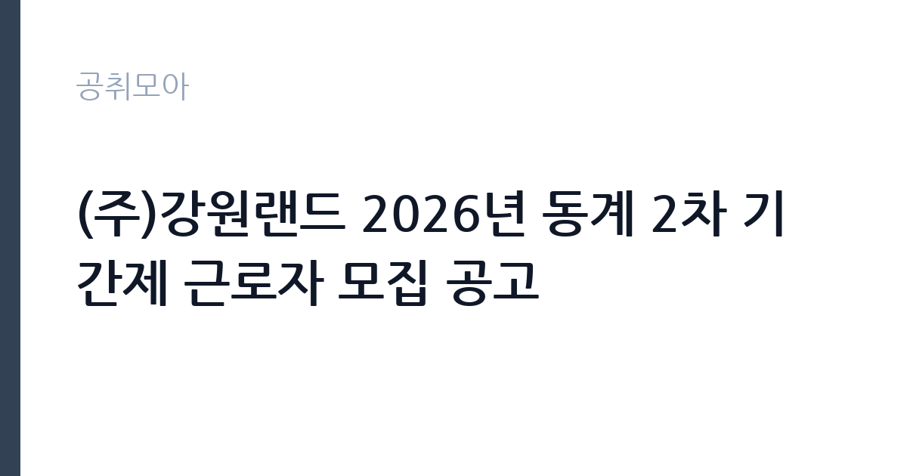

[공공기관] (주)강원랜드 2026년 동계 2차 기간제 근로자 모집 공고
(주)강원랜드 · 서울 · 마감 2026-10-27 (D-14) · 출처 잡알리오

한눈에 보는 모집 조건
| 기관 | (주)강원랜드 |
|---|---|
| 공고명 | (주)강원랜드 2026년 동계 2차 기간제 근로자 모집 공고 |
| 고용형태 | 기간제 |
| 근무지 | 서울 |
| 게시일 | 2026-10-13 |
| 마감일 | 2026-10-27 (D-14) |
지원자격, 이렇게 읽으세요
- 공공기관 채용공시
- 세부 조건은 원문 공고문 확인
공통 자격은 채용 결격사유에 해당하지 않는 분이며, 세부 자격요건과 모집 분야별 조건은 공고문을 참조해야 합니다. 동계 시즌 인력은 카지노·호텔·리조트 현장의 서비스와 운영 지원 중심으로 배치되는 흐름이므로, 교대근무와 주말·성수기 근무가 가능한지 먼저 점검하시기 바랍니다. 고원 지역인 정선 근무가 가능한지도 거주 계획과 함께 확인하시기 바랍니다.
이 공고의 포인트
첫 번째 포인트는 대규모 채용이라는 점입니다. 동계 1차에서는 357명을 모집한 바 있어 이번 2차도 적지 않은 인원을 뽑을 가능성이 큽니다. 두 번째로 강원랜드는 국내 유일의 내국인 출입 카지노를 운영하는 공기업이라, 서비스·리조트 분야 경력으로 활용 가치가 있습니다. 세 번째로 동계 시즌 한정 근무라 학업·다음 취업 준비와 병행 계획을 세우기 쉬운 구조입니다.
전형은 어떻게 진행되나
전형은 서류전형과 면접전형으로 진행되는 것이 일반적이며, 세부 일정과 배점은 강원랜드 채용 홈페이지(kangwon.cairos.co.kr)의 원문에서 확인하시기 바랍니다. 서류에서는 결격사유 해당 여부와 기본 자격이 심사되므로, 제출 서류의 누락이 없도록 점검하시기 바랍니다. 면접에서는 서비스 마인드와 교대·성수기 근무 적응 의지를 중심으로 물을 가능성이 높으니 관련 경험을 정리해 두시기 바랍니다.
원문에서 확인한 전형 방식
[공통사항] 1. 자격요건을 충족하는 자 2. 채용 결격사유에 해당되지 않는 자 ※ 세부사항 공고문 참조
이런 분께 추천해요
- 동계 시즌 단기 집중 근무로 수입을 마련하고 싶은 구직자
- 카지노·호텔·리조트 서비스 현장 경험을 쌓고 싶은 취업준비생
- 정선·고원 지역 근무와 숙소 생활이 가능한 지원자
지원 전 체크리스트
- 모집 분야별 세부 자격요건과 결격사유의 원문 대조
- 교대·주말·성수기 근무와 정선 근무 가능 여부 확인
- 계약기간과 근무 일정을 본인 계획과 대조
- 제출 서류 목록과 접수 마감시각 확인
모집 일정과 제출 타이밍
접수는 2026년 10월 13일 게시 이후 10월 27일에 마감됩니다. 이후 서류심사와 면접을 거쳐 동계 시즌 개시 전에 임용되는 흐름이며, 확정 일정은 채용 홈페이지의 원문에서 확인하시기 바랍니다. 시즌 인력은 임용 시기가 정해져 있어 일정 변경이 어려울 수 있으니, 합격 후 즉시 출근이 가능한 상태로 준비하시기 바랍니다.
직무 이해하기: 공공기관
동계 기간제 근로자는 카지노·호텔·스키장 등 리조트 현장의 운영 지원과 고객 서비스를 담당합니다. 성수기에는 방문객이 급증하므로 안내·정리·안전관리 같은 현장 대응 업무가 중심이 됩니다. 배치 부서에 따라 교대근무와 야간·주말 근무가 포함될 수 있습니다. 계약기간이 끝나는 계절 한정 자리이므로, 근무 종료 후 정산과 경력증명 발급 절차를 미리 확인해 두시기 바랍니다. 배치 전 직무 교육을 통해 현장 적응을 지원하므로, 처음 접하는 업무라도 매뉴얼과 선임자의 안내에 따라 차근차근 익히실 수 있습니다.
자기소개서 작성 팁
지원서에서는 서비스 현장 경험(아르바이트·인턴·봉사 등)에서 고객 응대와 돌발 상황 대처 사례를 중심으로 쓰시기 바랍니다. 성수기·주말 근무가 가능하다는 점을 분명히 밝히면 선발에 도움이 됩니다. 정선 근무와 숙소 생활에 대한 준비 상태를 솔직하게 기술하시기 바랍니다.
면접 준비 포인트
면접에서는 밝은 응대 태도와 체력·근무 의지를 중점적으로 확인할 가능성이 높습니다. 성수기 혼잡 상황에서 민원인을 어떻게 응대할지 묻는 질문에는 침착한 절차 대응을 사례로 답하시기 바랍니다. 교대근무 경험을 묻는다면 수면·건강 관리 계획을 함께 언급하시기 바랍니다.
급여·근무조건 읽는 법
보수는 원문 공고의 보수표에서 확인하시기 바랍니다. 기간제 근로자의 임금과 수당, 주휴·연차와 4대보험 적용은 근로기준법과 사내 규정에 따르므로 확정 수치는 원문과 근로계약서에서 확인하시기 바랍니다. 참고로 동계 1차 모집에서는 357명 규모로 공고된 바 있어(취업정보 게시 기준), 이번 2차의 모집 인원과 처우도 원문에서 대조하시기 바랍니다.
자주 묻는 질문
- 근무지는 어디인가요?
강원랜드 본사와 리조트는 강원 정선에 위치해 있으며, 일부 모집은 지역 단위로 나뉩니다. 세부 근무지와 숙소 지원 여부는 원문에서 확인하시기 바랍니다. - 계약기간은 어떻게 되나요?
동계 시즌 한정의 기간제 자리로, 계약기간 만료 후 고용관계가 소멸됩니다. 확정 기간과 연장 가능 여부는 원문과 근로계약서에서 확인하시기 바랍니다. - 정규직 전환 기회가 있나요?
기간제 채용은 정규직 전환을 전제로 하지 않습니다. 다만 강원랜드 정규직·체험형 인턴 등 별도 공고 지원 시 현장 경험이 자산이 될 수 있습니다.
함께 보면 좋은 공고
[공공기관] [직원채용] 무기계약직 연구기술직(방사선융복합연구팀) 공개 채용(재공고) — 마감 2026-10-27[공공기관] 단시간제(편의시설 점원) 채용공고 — 마감 2026-10-20[공공기관] [김해보훈요양원] 2026년 6차 요양보호직 채용공고 — 마감 2026-10-28출처: 잡알리오 공개정보를 바탕으로 공취모아가 정리한 안내글입니다. 모집 조건·일정은 변경될 수 있으니 지원 전 반드시 원문 공고문을 확인하세요. 본 글은 정보 제공용이며 합격을 보장하지 않습니다.